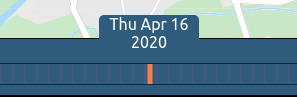
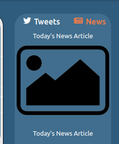
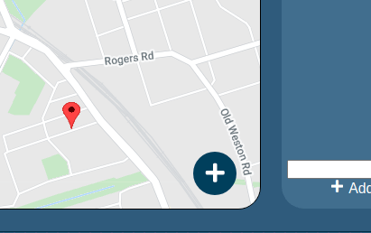
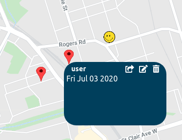
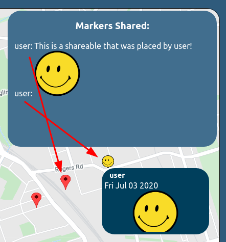

Here are some examples of user interactions that are available: - Collapsing side menus: you can click the collapse button on the side menus to collapse them so that the map is larger. - Selecting a date to travel to: by clicking and dragging on the Timeline, you can see content specific to a certain day. 
Viewing News specific to a certain day 
Adding a marker (text or image) to the map: when hovering over the PopoutButton, some shareables will show up. Click them to enable the adding mode, and click somewhere on the to place the marker. A popup window will appear, allowing you to modify the contents of the marker you placed. 
Categorizing markers: currently, we have certain groups you can place shareables in: news, vacation, and other. With this, you can describe the current state of affairs in the world or plan a vacation! Select from the filters on the left side to narrow down your search.
Editing markers you’ve placed: currently, there is the option to share your marker, edit its contents, or delete it. 
When a marker is shared with another user (by clicking the share button and typing in the user’s username), the other user will see the shareable pop up in their notifications box. 
When the admin is logged in, the “Info” box in the left menu panel contains an admin panel in which the administrator can view reported markers to moderate the content, or delete problematic users.
Here is a list of the hardcoded data you can experiment with: